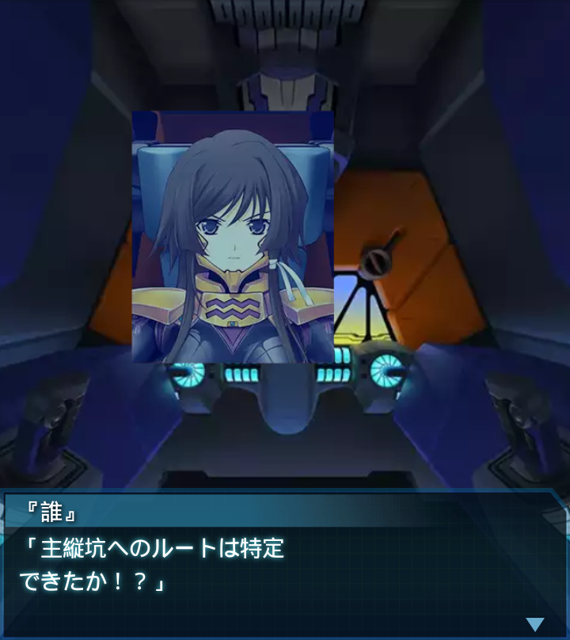

コンゴ・コンゴハイヴ2
篁唯依
「偵察部隊からの報告によると
ハイヴ内の横坑の殆どが不自然に
埋まり寸断されているそうです」

『誰』
「主縦坑へのルートは特定
できたか！？」
篁唯依
「はい、しかしそこは新しい枝坑で
かなり狭いとの事です。今データを
送りました」
篁唯依
「横坑の寸断によって、主たる通路
が全て失われた為に、急ぎ造った
ものと思われます」
『誰』
「なる程…確かにそうなる可能性は
ある。ＢＥＴＡ個体数が想定以上に
少ないのもそのせいか…？」
篁唯依
「通路が狭い為にＢＥＴＡの移動に
制限が加わっているという事
ですね？だとすれば――」
『誰』
「ああ、そこを抜けた先で、
大歓迎を受ける可能性もある。
用心しなければ…」
篁唯依
「探査部隊が通路に入ると言って
いますが…」
『誰』
「待て！そこでＢＥＴＡに遭遇して
下手に動いたら、逆に身動きが
取れなくなるぞ」
『誰』
「俺達が先に行くと伝えろ！この
程度、おまえ達の練度ならできる。
全機後に続けッ！」
ルナテレジア
「ハイヴ内に人工的な建造物！？
不自然ですわ…！」
篁唯依
「…大尉、これは。まさか」
『誰』
「ああ、この造り。
例の研究施設と酷似している…」

ルナテレジア
「これが研究施設ですか…。
ですが、なぜこのような場所に…」
『誰』
「ハイヴの無い我々の世界と、
ハイヴのある世界、そして施設が
ある世界――」
『誰』
「それら複数の世界が融合した結果
という事だろう。以前南極で同様の
状況に遭遇した事がある」
篁唯依
「…大尉、施設の人工反応炉と
思しきものが見当たりません」
『誰』
「融合の際に元の世界に置いて
来たか、あるいは分断してこの
ハイヴのどこかにあるか…」
篁唯依
「後者だとしたら厄介ですね。
２つの反応炉を両方破壊しなければ
作戦成功とはなりません」
『誰』
「ハイヴの攻略難度は下がったが、
そう簡単に終わらせてはくれない
ようだな…憎たらしいぜ」